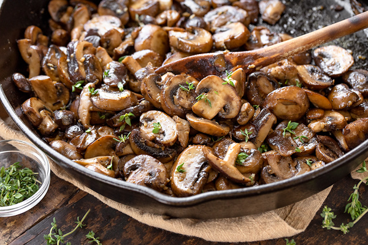

Sauteed Mushrooms

Fantastic Rustic Sauteed Mushrooms
Typical portuguese recipe. Really simple to make, quick and fantastic!
Ingredients
- Mushrooms (I used white mushrooms aka Agaricus bisporus)
- Olive oil
- Garlic (minced)
- White wine
- Laurel (leaf)
- Salt and Pepper
Ingredients
- Begin with heating your olive oil in a pan with the minced garlic and the laurel
- Add the mushrooms cutted in quarters and let them saute for a couple of minutes
- Season with salt and pepper at taste
- Add a cup of white wine, cover and let it simmer for about 10m